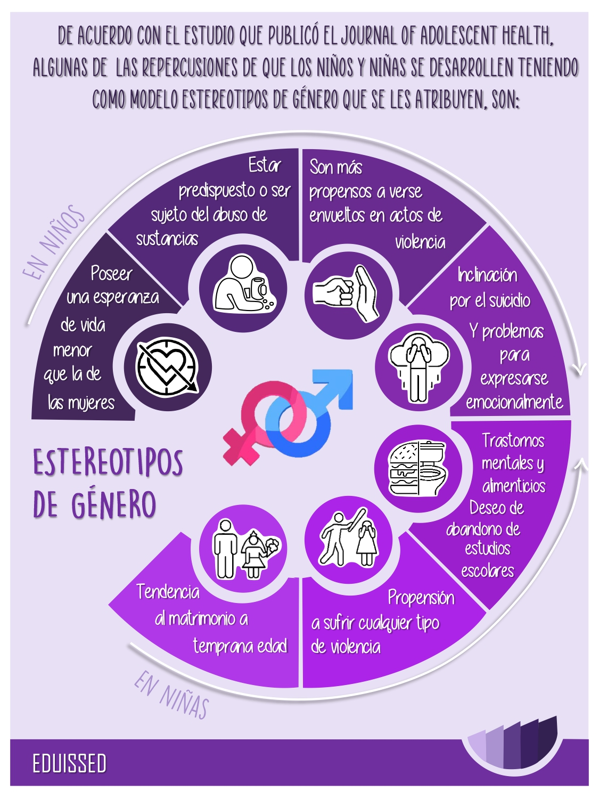

1. Relationships
Relationships are fundamental among human beings and allow us to maintain an emotional connection with ourselves and the rest of the world.
1.1 Family
Family is the first relationship we are part of as human beings. It is where we develop and where we spend the majority of our time. There are many different types of families in the world: (biparental, single-parent, headed by minors or legal guardians, extended, nuclear, and non-traditional).
According to the CNDH:
Families are dynamic organizations that adapt to demographic, social, economic, and cultural changes that continually occur in society. Throughout history, its members have grouped together to form structures capable of facing the challenges specific to each period and community in which they have lived, with the aim of ensuring their subsistence and security. (CNDH, 2018, pp 1-2)
Some things that are important about family:
- Conflict and misunderstandings between parents and legal guardians and children are common, particularly during adolescence, and can generally be resolved.
- Love, cooperation, gender equality, care, and mutual respect are important for the functioning of the family and healthy relationships.
- The family is the basic unit of society historically conceived as the group of people who cohabit and share a dwelling and, above all, kinship ties.
- The family is defined as a group of people, generally linked by bonds of kinship, whether blood or political, and regardless of degree, who live together, usually occupying an entire dwelling. The family includes domestic service personnel who overnight in the dwelling and guests on a family basis. The definition also includes individuals who live alone, such as single-person families.

The family also has rights and obligations, such as:
- Right to establish or live in a family and not be unjustifiably separated from it, except in cases of serious risk or danger.
- Right to marry freely and voluntarily.
- Right to decide the form and structure of their family.
- Right and obligation to provide and receive support.
- Right to inherit and be an heir.
- Social security rights (medical services, pensions, among others).
- Rights derived from parental authority exercised over daughters and sons (for example, educating them, instilling values, a religion, deciding their place of residence, to mention a few).
- Obligation to care for elderly persons.
- Obligation of mutual respect and consideration, without discrimination of its members by age, occupation, disability, or any other.
- Obligation to respect and fulfill the rights of girls, boys, and adolescents.
- Obligation not to exercise any type of violence against any family member.
- Obligation of assistance, solidarity, care, and mutual protection.
- Equal duty for everyone to collaborate equally with household chores.
1.2 Friendship, Love, and Romantic Relationships
- Loving and being loved enriches our lives. When people feel emotionally close to another person, they are happier and even healthier. Love helps us feel important, understood, and secure.
- Friendships are based on trust, exchange, respect, empathy, and solidarity.
- Relationships involve different types of love (e.g., love between friends, between parents, between romantic partners) and love can be expressed in many different ways.
- Friendships and love help people feel good about themselves.
- Friends can influence each other in positive and negative ways.
- Attraction: it is the "chemical" part of love. It refers to the interest or physical desire—or even sexual desire—that one experiences for another person. Attraction is what makes us want to kiss and hug the object of our affection. Attraction also underlies that mixture of perturbation, nervousness, and excitement we experience when that person is near.
- Intimacy: it is the bond we develop when we share thoughts and feelings with a person that we do not share with anyone else. When you experience that feeling of intimacy with your boyfriend or girlfriend, you feel supported, cared for, considered, and accepted just as you are. Trust is an essential component of intimacy.
- Commitment: it is the promise or decision to stand by that
person despite the ups and downs that
may occur in the relationship.
- Romantic love arises when attraction and intimacy are combined. Many relationships develop from an initial attraction (infatuation or "love at first sight") and then evolve towards intimacy. It can also happen that the intimacy of a friendship evolves into attraction when two people realize that their relationship is not just a friendship and that they have begun to feel mutual romantic interest.
1.3 Tolerance, Inclusion, and Respect
Tolerance means respecting the ideas, beliefs, or practices of others when they are different or contrary to one's own, as well as recognizing, accepting, and appreciating cultural pluralism, forms of expression, the human rights of others, and the diversity of appearance, situation, behavior, and values of all individuals.

- Every human being is unique, can contribute to society, and has the right to be respected.
- Stigma and discrimination are harmful.
- It is disrespectful and harmful to harass or discriminate against any person based on their social, economic, or health condition, ethnic group, race, origin, sexual orientation, gender identity, or other differences.
- Tolerant behavior involves individual discernment to respect and accept the racial, political, sexual, and social differences of others. Likewise, tolerance is closely linked to the duty of every person to respect the human rights of others. The right to freedom and equality and the prohibition of discrimination are human rights expressly recognized in international treaties of which Mexico is a part, so it is necessary to promote respect for them as part of the culture, in a process of learning and internalization by the entire population.
-
Elements to promote tolerance according to UNESCO:
- Use language without racial, ethnic, or gender qualifiers, which can be promoted by avoiding adjectives and verbs that prejudge the description of events or people. In Mexico, an example can be identified with the constitutional modifications, of June 2011, where the term "individual" was changed to "person," as it is more in line with a gender perspective.
- Equality among individuals to access social benefits, public activities, and educational and economic opportunities for all groups, both men and women, and of any race, ethnicity, religion, age, or social class.
- Mutual respect for the human dignity of all members of society.
- Equal opportunities for participation by minorities, men, and women, in the democratic process.
- Ensure the preservation of cultural integrity and minority languages and promote their use; respect for human dignity and all rights of individuals belonging to minorities and indigenous peoples.
- Interethnic and interreligious dialogues on common problems and on relationships between groups are part of community discourse.
2. Values, Rights, Culture, and Sexuality
Sexual rights are a response to various human needs related to sexuality that underpin the different values taught to us from childhood to adulthood. Let's explore!
2.1 Values and Sexuality
Human sexuality is one of the most important ways of relating for people, so almost all human values that we promote will have more or less direct importance in psychosocial development.
Pleasure: It is important to convey that pleasure is part of healthy sexuality. If there is no pleasure in people's sexual activity, there is likely something to review.
Intimacy: It is about the reserve that people choose for certain actions over others, understanding that there is physical intimacy as well as spiritual intimacy, and that people tend to feel more fulfilled and happy when they can enjoy both.
Communication: As in any other aspect of human relationships, it becomes very important to be able to communicate likes, desires, emotions, fantasies, preferences, etc. If people are encouraged to transmit what they feel and ask for what they need in a respectful manner, it is much more likely that healthy and pleasurable sexual behaviors will develop.
Respect: It is fundamental to convey that my right ends where the other's begins and vice versa. It is not possible to relate sexually in a healthy way if respect is not incorporated into our way of relating.
Health: It is important to provide information about the most widespread sexually transmitted diseases as well as the optimal ways to minimize these risks. At the same time, it is important to consider that there are healthy and unhealthy ways to exercise our sexuality. If there is discomfort, suffering, physical or moral pain in this exercise, help should be sought without fear or prejudice.
Responsible Procreation: When sexually educating another human being, it is important to consider that sexual intercourse has as one of its possible consequences reproduction. It is important, in addition to informing about the different contraceptive methods, to remember that it is the responsibility of individuals to ensure that reproduction occurs alongside sufficient emotional maturity and accompanied by the desire for parenthood that a baby needs to develop healthily.
Diversity: People experience sexuality in diverse ways. It is healthy that it is so, just as it is healthy to learn to respect this diversity in others and in oneself.
2.2 Human Rights and Sexuality
Sexuality is a fundamental part of people's lives in various aspects: biological, psychological, and cultural. Men and women decide how we exercise our bodies, our eroticism, and our affection based on the different constructions we hear and experience throughout our lives, whether formally or informally.
Sexual rights are a response to the various human needs surrounding sexuality, they are the pillar of the various values that are taught to us in childhood, adolescence, youth, or adulthood such as respect, freedom, empathy, equality, autonomy, etc.
Therefore, in Mexico as in other countries, sexual rights are human rights, meaning that every person has the right to fully and responsibly exercise aspects of their sexuality because they are protected by international and national treaties.
Knowledge of rights implies that people can demand their effectiveness from institutions.
2.3 Culture, Society, and Sexuality
Customs, social behavior, eating habits, and ultimately, way of life, are highly influenced by culture. Sexuality, as could not be otherwise, also establishes the foundations of its basis on cultural patterns.
By culture, we do not refer to the amalgamation of knowledge and ideas acquired through the development of intellectual faculties, through reading, study, and/or work, but to the totality of understandings, judgments, ideas, traditions, and/or customs that characterize a people, a social class, or an era.
Culture, by its nature, provides rational norms and criteria, but also carries certain biases that, although reasoned as harmful, are extremely difficult to eliminate. Sexuality is not the only area affected by certain cultural dogmas, although it is one of the most punished.
Many sexual myths are based on culture. There are numerous misconceptions about sexuality, some of them general and others specific. In this way, there are false beliefs about masturbation, premature ejaculation, lack of erection, or lack of desire.
This poses a barrier to social progress in terms of sexuality. In this sense, it is evident that, in recent decades, there has been significant progress in issues such as gender equality, but the presence of these types of ideas prevents progress from continuing. The result is that, instead of the development of these types of concepts continuing, it is distorted, creating multiple, in turn erroneous, ideas about what is or is not equality, women's rights, etc.
In conclusion, culture and its mythology can be very harmful to social progress and to people with sexual dysfunctions and their partners, but it can also transcend these two aspects, as it can be responsible for the appearance of relationship problems and sexual dysfunctions in both men and women, people without any pathologies or problems who can suffer great discomfort solely by accepting erroneous ideas.
3. Understanding Gender
When we mention the word gender, we primarily unfold concepts and social constructs that have historically been formed and accepted. The importance of informing ourselves about these issues lies in being able to question ourselves so as not to fall into credulity and to form our own vision and opinion.
3.1 Social Construction of Gender and Gender Norms
The social construction of gender is linked to the culture, social class, religion, history, ethnicity, age, and political framework of each individual.
Basic Concepts
Gender determines what society expects in terms of behavior, dress, and thinking from a person according to their biological sex.
The idea of gender is often confused with biological sex; however, they are completely different. Biological sex refers to the physiological characteristics with which we are born, based on genes, hormones, and genitals.
On the other hand, gender identity and expression refer to how we express our gender through our attitudes, clothing, behavior, etc. Identity is formed as individuals come into contact with their environment. All people have a gender identity and expression. It is important to respect each of them.
Gender roles are the functions and responsibilities learned in a social group that make members perceive them as masculine and feminine. And gender stereotypes are behaviors and attitudes considered "appropriate" or "suitable" for each sex.
"From here also arise the concepts of masculinity and femininity, which determine behavior, opportunities, valuation, and relationships between women and men." (INMUJERES, 2004)
Gender roles answer the question "What should I do if I am a man/woman?", for example:
Functions of a woman: Raising children, cooking, cleaning, attending to the husband.
Functions of a man: Providing, performing tough jobs, being the head of the household.
And gender stereotypes answer "How should I be if I am a woman/man?", for example:
Behavior of a woman: Kind, affectionate, submissive, delicate, emotional.
Behavior of a man: Strong, cold, brave, dominant, not emotional.
As you can see, women have been associated with household chores, while men are associated with aggressiveness; this reduces opportunities for growth, both for women's independence and men's emotional skills. However, since these ideas are social constructions, they can change and adapt according to the context and history of each community.
What are the main sources of information where we learn these notions?
Notions like these are not conscious choices that we can individually admit or deny.
The main sources from which we are encouraged to adopt these notions are: Family, school, friends, and above all, the media, because with the images that circulate in the media, users become familiar with certain stereotypes and prejudices that are perpetuated.
How do these concepts influence my personal life?
By practically "defining" our lives based on these values, our interaction and relationships with others are affected.
According to the fact sheet: Gender and health published by WHO, gender ideology influences health and well-being in three different areas:
- Determinants of health related to gender, including interaction with other social and structural determinants.
- Health-related behaviors based on gender.
- Health system response based on gender.
Click on the image to enlarge it
3.2 Equality, Gender Stereotypes, and Prejudices
It is our responsibility to strive for a better world with more opportunities for everyone, to fight for the rights that correspond to us, and to question whether what we are taught is right, but for that, we must first inform ourselves correctly.
UNICEF defines gender equality as "the fact that women, men, girls, and boys should enjoy, equally, the same rights, resources, opportunities, and protections."
On the other hand, gender inequality occurs when fewer opportunities and privileges are granted to a person solely because of their gender and the roles assigned to them.
A clear example of gender inequality that we can currently see reflected is the gender pay gap and disparities in job opportunities:
According to the study published by INMUJERES in 2018, 78 out of every 100 men and 44 out of every 100 women participated in economic activities.
Despite the increase in female participation in paid work in recent decades, it still remains well below male participation (...). The average weekly hours of paid work for men were 45.8 and for women 37.9 hours. (INMUJERES, 2022)
And in 2022, the rate of participation in unpaid work was 68.87 for men and 95.39 for women.
On the other hand, gender stereotypes are also harmful in the perpetuation of gender inequalities:
Whether they are explicitly unfavorable, such as "Women are weak," or seemingly compassionate, such as "Women are affectionate." For example, the custom of seeing women as caregivers suggests to men that they can shirk their responsibility as fathers.
Knowing all this, it is important to recognize that unfair and unequal treatment of people of different genders is wrong and goes against human rights; we must respect the rights of any person regardless of their sex or gender.
3.3 Gender Violence
The purpose of this information section is to raise awareness to be able to identify if we are suffering violence and recognize that all forms of gender violence are unacceptable and that it is possible to break that cycle. Together, we can!
With gender violence, we refer to the type of social injustice, or structural violence, directed at women, with the aim of subjugating them to the male gender. We can see it reflected through behaviors, attitudes, and ideas that are based on the same system that relies on gender stereotypes and prejudices.
To be able to identify if we are suffering violence, first, we must know what the types and modalities are.
The sixth article in the General Law on Women's Access to a Life Free of Violence identifies and describes the different types and modalities of violence, indicating the environment in which the violence occurs, whether publicly or privately, as well as the specific forms of aggression.
Types of Violence
- Patrimonial: It refers to any action to harm the belongings or properties of a person. It can manifest as theft, destruction, or withholding of objects, personal documents, wealth, and/or inherited rights of the victim.
- Psychological: Any event from the aggressor that harms the psychological security or stability of the victim. It manifests as emotional/verbal abuse, rejection, humiliation, threats, prohibitions, among others.
- Economic: The aggressor hinders the economic stability of the victim by limiting, controlling their expenses and income, with the wage gap.
- Physical: "It is any act that inflicts non-accidental harm, using physical force or some type of weapon or object, which may or may not cause injuries, whether internal, external, or both." (INMUJERES, 2008)
- Sexual: Considered a form of sexual abuse, it is an act that manages to subdue the body and sexuality of the victim, as it goes against their freedom, physical integrity, and dignity.
Rights when suffering sexual violence
The Official Mexican Standard 046-SSA2-2005 Family violence, sexual violence, and violence against women, establishes certain criteria for the care of victims of violence, which the personnel in charge of care must follow:
- Promote the emotional stability of the person by ensuring crisis intervention and subsequent psychological care.
- In case of rape, emergency contraception pills (ECP) must be offered immediately and up to a maximum of 120 hours after the event, prior complete information about the use of this method, so that the person can make an informed decision.
- Inform about the risks of possible sexually transmitted infections and prevention through chemoprophylaxis.
- Provide counseling, follow-up, and guidance to the affected person about the public, social, or private institutions they can go to for other services.
- In case of pregnancy resulting from rape, and with prior authorization from the competent authority, medical abortion services must be provided at the request of the interested victim, in case they are a minor, at the request of their guardian.
- In all cases, the victim must be provided with complete information about the possible risks and consequences of abortion, in order to ensure that the victim's decision is an informed one.
Statistics
"Four out of ten women aged 15 and over have experienced harassment, sexual harassment, offenses, and sexual abuse in community spaces (streets, markets, transportation, cinema, church, store, hospital, etc.)." (Endireh, 2006)
| Type of Violence | Percentage at national level |
|---|---|
| Physical | 10.2 |
| Psychological | 32.0 |
| Patrimonial | 5.8 |
| Economic | 22.9 |
| Sexual | 6.0 |
(INMUJERES. Elaborated from INEGI, Endireh, 2006.)
After becoming aware of these issues, we must recognize that all forms of gender violence are unacceptable.
4. Violence and Personal Security
The importance of informing ourselves to protect ourselves lies in being able to identify when and how to act in any violent situation so as not to allow such situations to occur. You are not alone.
4.1 Violence
It is essential to have knowledge and know how to recognize any type of violence, whether passive or aggressive. If you have suffered any type of violence, do not hesitate to seek support, do not remain silent.
The World Health Organization (WHO) stated that violence as a concept itself is the "Deliberate use of physical force, whether in the form of threat, against oneself, another person, group, or community, which results in or is likely to result in injury, death, psychological harm, developmental disorders, or deprivation."
Sexual violence is based on acts capable of harming the body and sexuality of a person without their consent, therefore undermining dignity and integrity.
According to UNICEF:
- 19.2 million women were forced at some point into some form of harassment, bullying, abuse, intimidation, etc.
- In 2018, 40,303 women in Mexico were victims of sexual assault.
- Approximately 32.8% of adolescents between 15 - 17 have been victims of any form of public sexual violence.
Another form of violence that exists is incest, which consists of sexual relations between relatives, meaning that they share a direct blood relationship.
When a person constantly harasses, annoys, or pursues someone else, they are engaging in some form of harassment. There are different types of harassment: Physical, Sexual, Verbal, Psychological, Social, School, and Cyberbullying.
A sexual assault or abuse involves any type of non-consensual sexual contact. Sexual assault refers to the pressure (physical or emotional) of one person on another to perform sexual acts. Rape is defined as the force or pressure that one person exerts on another to force them to have sex (forced vaginal, oral, or anal penetration by a body part or object).
The following situations are some examples considered as sexual abuse, harassment, or assault:
- When someone exposes their genitals or forces another person to see or touch them.
- When someone rubs their genitals against another person without prior consent (this happens a lot in public places like the subway).
- When someone touches any part of the body such as breasts, buttocks, or genitals without consent.
UNICEF mentions that sexual exploitation "refers to any abuse or threat in a situation of vulnerability, with unequal power relations, for sexual purposes, for the material, social, or political benefit derived from the sexual exploitation of another person."
According to El Financiero, Mexico is one of the countries with the highest sexual exploitation, especially because it encompasses child exploitation, with approximately 80 to 85 thousand boys and girls.
What to do if you experience any of the above situations?
If you ever experience these situations, it is important to immediately seek help to protect your integrity. If you are a minor, you can communicate what is happening to a trusted adult, so that they can inform the authorities. On the other hand, if you are an adult or believe that you are already somewhat more aware of the situations, you can seek help and directly report it to the authorities.
As a first step, if you are in a violent situation, you can always call 911 no matter where in the world you are. The number 911 is one way to handle calls about emergencies related to various types of violence, such as abuse, sexual harassment, rape, partner violence, family violence, etc.
Also, if you are experiencing any type of violence and require advice or any other support, you can always consult the following sites:
- Locatel Women's Line Phone: (55) 56 58 11 11, Option 5
- If you suffer digital violence or any cybercrime, you can report it securely and confidentially to 088. Learn more at the government's website
- Citizen Service Center The Lifeline for attention to problems related to mental health or addictions: call 01800 911 2000. You can also write to lalineadelavida@salud.gob.mx
- Justice Centers for Women (CJM). The CJMs are an initiative of the National Commission to Prevent and Eradicate Violence against Women (Conavim), of the Ministry of the Interior (Segob). You can consult their directory here: Location_and_data.pdf
- State Institutes for Attention to Violence against Women of INMUJERES IMEF Directory
- Services for the Attention of Women, Girls, Boys, and Adolescents in situations of violence Services for the Attention of Women, Girls, Boys, and Adolescents in situations of violence
- ENAPEA Microsite Sites of Interest: ENAPEA Directory
- Specialized Services for Violence Prevention: Specialized Services for Violence Prevention
4.2 Consent, Privacy, and Physical Integrity
In this section, we teach you the basic concepts so that you learn to be able to set limits and safeguard your integrity as a person by not allowing any outsider to harm you.
Consent is defined as a type of agreement to participate in something and confirm that the participant(s) want to do so. The agreement is made before carrying out the action.
To consent and ask for consent consists of establishing our personal boundaries and knowing how to respect those of others. Without consent, any activity (such as sexual relations, caresses, kisses, among others) constitutes aggression and violations of human rights.
Consent must have certain characteristics:
- Given Freely: It is an action that must be given without pressure, manipulation, threats, etc. You cannot consent to something while under the influence of drugs, alcohol, or unconsciousness.
- Given Informed: All information and conditions must be known. For example, if someone says that having sex will be with protection and in the end does not use it, the action was not fully consensual.
- Is Specific: Being aware of specific things, consenting to one thing does not mean agreeing to do another.
- Is Reversible: Consent can always change depending on how the situation evolves; it can always be withdrawn and opinions can be changed at any time.
Using consent creates safe and comfortable spaces.
Some simple measures we can take to set limits are: explicitly saying "no," "I don't want to," "I won't do it," or simply "go away." When a person agrees to do something but expresses concern or insecurity, there is no consent; a "I don't know" or silence also means no consent.
Conversely, when we do want to consent to an action, there is a sense of motivation and enthusiasm, so we must make sure to receive an active "yes" or some kind of affirmation. It is important to be direct and ask.
Privacy is understood as the way in which each one relates their personal life to others; however, when we talk about privacy, we also refer to a physical realm, for example: someone else touching our body without consent, besides being violence, is also a violation and invasion of privacy.
Just as we can choose to share our thoughts, secrets, and experiences with whomever we want, we can also do so with our body.
Physical integrity consists of the rights that people have to be protected in cases of aggression, abuse, or injuries that can harm the human body or affect health. We also have rights over our own body. We have the right to decide what to do with our body (under our own criteria) without being judged. Being underage, it is advisable to consult with a trusted adult to better safeguard our integrity, security, and in some cases privacy.
4.3 Safe Use of Information and Communication Technologies (ICT)
It is necessary to understand the scope and functionality that communication media such as social networks can have and how to use them responsibly and safely so that our security is not compromised.
If any incident occurring to you through social networks makes you feel uncomfortable, you can always consult with an adult for advice on the best course of action.
We must always bear in mind that if we do not take care of or give more importance to the use (in terms of what we share) of the internet and social networks, we may experience serious consequences. The way we use these tools directly and indirectly influences our lives, how we behave, what we think, our social life, etc.
And if you or someone you know is a victim of cyberbullying, it is advisable to do the following:
- Do not interact or respond, instead, block the attacker.
- Save the evidence to use if necessary.
- Report the abuse to the platform and likewise, report the person's profile.
- Involve the appropriate authorities if necessary.
Sexually explicit media such as pornography and sexting can be dangerous, as pornography often depicts women, men, and sexual relationships unrealistically and incorrectly. This can lead to gender stereotypes, low self-esteem when viewing hegemonic and not so "real" bodies, promote aggressive attitudes within sexuality, decrease sexual satisfaction, among others.
Pornography: It is defined as the open and explicit description or representation of scenes of sexual activity.
Sexting: It is the activity of privately exchanging photos, videos, or messages of a sexual and erotic nature that are self-produced through communication tools such as social networks, any instant messaging application, etc.
5. Skills for Health and Well-being
Well-being is the experience of health, happiness, and prosperity. It includes having good mental health, feeling highly satisfied with life, and having a sense of meaning or purpose. Have fun learning.
5.1 Influence of Norms and Peer Groups on Sexual Behavior
What is Peer Pressure?
It is the force, negative or positive, exerted by a certain group on an individual. This same pressure often leads the adolescent to adopt or carry out behaviors with which they may not always fully agree.
You may wish to be like your peers, even when they are not pressuring you. It's normal to want to fit in.
Peers affect our lives even unconsciously, as simply spending a lot of time in a group, you start to learn customs and ways of behaving, while they also learn from you. Peers can have a mutually positive influence. Maybe a classmate taught you an easy way to remember the planets in the solar system. Perhaps you admire a friend because they are good at sports, and you try to be more like them. Maybe you excited others with your new favorite book, and now everyone is reading it.
But, just as they can have a positive influence, they can also have a negative one. They can influence us to do things that are not so good, such as taking substances, alcohol, or engaging in practices that endanger our health and eventually, our lives.
How do Peer Groups Influence My Sexual Decisions?
Due to the influence these groups have on our lives, it is very likely that we will be influenced by what they tell us and incite us to do, which includes our sexual life. This is not necessarily bad since, in many cases, our parents act as peers, and if we have the necessary education, they can influence decision-making and attitudes related to our sexuality in a positive way.
A good peer influence can, for example, teach us about condom use, about various contraceptive methods, and other topics related to sexuality; and even if it does not teach us, it can guide us to find the information on our own. However, a bad influence can give us the idea that condom use is not necessary, or that sexual life is something unimportant that can be taken as a game and that STDs (sexually transmitted diseases) are not real or irrelevant.
Strategies for Challenging Negative Influences from Peer Groups
It is always important to have a good education and to fully trust in our knowledge. If we doubt something or do not know the answer to a certain question, it is never wrong to ask and investigate a little to clear a misconception from our minds.
- You must know what is right. Trust your feelings about what is right and what is wrong. Ask yourself, "Is this right?" You probably already know the answer. When you know what is right, it helps you to stand firm.
- Have a supportive friend. It can be very helpful to have at least one peer who is also willing to say "no". This greatly reduces the power of peer pressure. It's very good to have friends who support you when you don't want to do something.
- Choose good friends. Maybe one of your parents or a teacher told you, "Choose your friends wisely." Peer pressure is one of the reasons they say this. If you choose friends who don't use drugs, don't skip class, don't smoke, and don't lie to their parents, you probably won't do these things either, even though other kids do.
- Help a friend. Maybe you realize that a friend has trouble saying no to peer pressure. You can help by saying, "I'm with you. Let's go."
- Walk away. If you face peer pressure when you're alone, there are still things you can do. You can walk away from kids who pressure you to do things you know are wrong. You can tell them "no" and just walk away. Better yet, find friends and classmates you can hang out with.
- Ask an adult for advice. If you face peer pressure and find it difficult to handle, ask for advice from an adult you trust. Talk to one of your parents, a teacher, or a school counselor. It can help you feel much better. Plus, they can help you prepare for the next time you have to face peer pressure.
5.2 Decision Making
Decision making is a process that individuals go through when they have to choose between different options. Every day, each individual is faced with situations where they must opt for something, and that decision is not always simple.
In the realm of human behavior and psyche, this is a fundamental topic, as people do not respond in the same way to a problematic situation due to various elements such as personality structure, development, maturity, and the stage of life they are in.
Types of Decision Making
The decision-making process occurs periodically and constantly in an individual's life. Often, it responds to conflicts that arise on a daily basis, while others are occasional.
According to different characteristics, the decision-making process can be:
- Rational: A process in which possible alternatives are analyzed using reasoning based on verifiable sources and evidence.
- Intuitive: A process in which the individual takes into account intuition and personal experience to lean towards one of the alternatives.
- Personal: Decision-making process of an individual within the private sphere.
- Routine: Process performed by an individual or group periodically; they are situations that do not require much analysis and do not involve complex issues.
- Emergency: Process that an individual or group undergoes to make a decision in response to a new and exceptional situation.
- Group: Process carried out collectively among the members of a group, where consensus prevails, and the alternative with the most support is chosen.
- Individual: Process executed autonomously by a person within a context such as an organization or company.
Characteristics of Decision Making
- Clarity: Refers to the importance of having a clear understanding of the objective to be achieved in the process and the situation to be resolved.
- Impact: Refers to the consequences that each of the alternatives may bring. It is important to consider that all options will have consequences, so the alternative that generates the most favorable impact should be chosen.
- Periodicity: Refers to the regularity with which individuals or groups make decisions. Some decisions are made daily, while others occur at certain intervals, which may be random or predetermined.
- Actors: Refers to the individuals involved in the decision-making process, which can be made individually or collectively depending on each case.
- Reversibility: Refers to whether it is possible to reverse the choice of an alternative. The more irreversible the consequences of any of the alternatives, the more attention should be paid to the decision-making process.
Importance of Decision Making
Making decisions is one of the most important processes in a human being's life, as it is through the choices made that the individual marks their personal and professional path. For this, it is advisable to set clear objectives on which to base daily decisions and recognize the most effective way to carry out the process.
One must work on overcoming the fear of error, tolerance for frustration and uncertainty, and recognizing the desire to achieve personal or professional goals.
5.3 Communication, Rejection, and Negotiation Skills
Communication is the process by which information is transmitted from one entity to another. It is the exchange of feelings, opinions, or any other type of information through speech, writing, or other signals.
Beyond each person's personality, there are many other elements that can determine whether conversations and social interactions proceed smoothly or not. Much of this has to do with basic communication skills, a set of abilities that must be put into practice when interacting with others to ensure that dialogues flow properly, without giving rise to misunderstandings or generating unnecessary resistance.
That is why communicating effectively will enable us to enjoy better relationships at work, in romantic relationships, friendships, family, and in general, with all the people around us.
Main communication skills to pay attention to in order to enrich personal relationships:
- Assertiveness: Assertiveness is the core of basic communication skills and involves the ability to find a balance between what one wants to say and consideration for the interests and possible vulnerabilities of the interlocutor. In other words, someone with a good level of assertiveness can find respectful ways to communicate something that is relevant despite it may not be pleasant for the interlocutor, and do so in the least painful way possible.
- Eye Contact: Eye contact is basic and is the first step in establishing a face-to-face conversation that flows smoothly. Not making eye contact when it is possible to do so (because visual access to the other person's face is available) not only means missing the opportunity to connect with someone; it also likely creates an awkward atmosphere of mistrust and insecurity.
- Adopting the Other's Perspective: This communication skill is related to what we know as theory of mind, which is the ability to know at all times what others know that is not oneself. However, beyond knowing the knowledge others have at any given moment (i.e., without confusing this with one's own knowledge), it is very important to be able to keep in mind the motivations and interests of others during a conversation.
- Emotion-Message Coherence: This is one of the basic communication skills, as errors in this aspect can quickly degrade the course of a conversation. It consists of maintaining coherence between what is said and how we convey emotions both through our gestures and the modulation of our voice.
- Negotiation Skills: Practicing negotiation skills does not mean engaging in a formal negotiation, but it happens every time we engage in a dialogue where there are at least two people with partially conflicting interests. It involves rejecting hostile ways of communicating this clash of interests and focusing at all times on what both parties have in common to reach agreements where everyone loses something and gains something at the same time.
- Active Listening: Active listening is relatively easy to do spontaneously, tending to show signs that we are listening to what the other person is saying. It involves nodding occasionally, showing reactions to what the other person says, making small comments that express interest but do not interrupt the flow of dialogue, etc.
- Empathy: Empathy is more about what is shown and done than what is said. It consists of the ability to make the other person see that what they communicate is understood by us on an emotional level.
- When Nervous, Take an Active Role and Ask Questions: Paradoxically, if you feel nervous when participating in a conversation with someone you don't know well or who intimidates you, a good way to keep stress at bay is not to remain passive and to ask questions, showing interest in the other person's ideas and opinions.
- Use Humor: Humor is a great ally for creating friendly communication contexts where tension does not accumulate.
- Anticipate Moments of Discomfort for the Other Person: There are ideas or comments that, when spoken aloud, can be interpreted as an attack. Therefore, to improve communication skills, one must get used to anticipating these kinds of problems, using appropriate linguistic formulations, and providing necessary explanations.
- Avoid Defensive Postures: If you want to convey honesty and a willingness to build bridges, do not use non-verbal language that says otherwise. Do not cross your arms over your chest all the time, or position yourself sideways when speaking to someone, do not maintain a tense posture, etc.
- Keep Important Ideas in Mind to Communicate, But Don't Memorize: Except for speeches given to an audience, memorizing entire phrases of what needs to be said is counterproductive. Instead, remember basic ideas, concepts that summarize what you need to express, and improvise on how to communicate them.
5.4 Media Literacy and Sexuality
According to UNESCO, media literacy is the set of skills, knowledge, and understanding necessary for individuals to interact with information and media.
In other words, it is a learning process of skills and tools that allow us to adopt a critical attitude towards the content we consume. Literacy involves defining, locating, evaluating, organizing, judging, and processing the information we receive and/or emit.
Media literacy, therefore, is about helping people acquire competencies that enable them to be critical and literate in all media formats so they can control the interpretation of what they see or hear rather than letting interpretation control them.
Taboos in Sexuality
The lack of sexual education leads to the perpetuation and creation of myths, stereotypes, and taboos about sexuality that hinder us from relating in a natural, positive, and healthy way! Sexuality is often discussed from the most biological perspective, and usually focusing on existing risks and dangers.
Conversely, there is little discussion about self-awareness, self-esteem, emotions related to sexuality, relationships with others and intimacy, self-acceptance, and the naturalness of oneself and others.
Considerations
Talking to young people - We are afraid that they may not understand what is being discussed, or that it may harm them, when they experience it in the most natural way, and the problem comes from our own conditioning and education, as we punish behaviors instead of talking and explaining in an age-appropriate manner, something as natural as sexuality.
5.5 How to Find Help and Support
Everyone has the right to receive affordable, objective, and respectful assistance that maintains confidentiality and protects privacy.
Sooner or later, every family needs help. Although asking may not always be easy, recognizing your family's needs and seeking support from others is a sign of strength. Advocating for your family helps you develop self-confidence and persistence.
How to Ask for Help:
- Observe what others are doing and where they are going.
- Listen when others talk about resources you might need.
- Ask. Be persistent. Keep trying.
What to Ask:
- Be clear about what you need.
- Be reasonable. Make sure you are asking the person who has the ability or resource to give you.
- Be polite, but firm.
Who to Ask for Help:
- Friends and relatives are a good source of help.
- Acquaintances can provide equally important support.
- Professionals provide yet another type of assistance.
A key tool you have to meet your family's needs is the ability to find information, resources, and request help.
6. The Human Body and Development
The stages of human development are a series of biological, physical, emotional, and social changes that individuals go through throughout their life journey. Let's learn!
6.1 Sexual and Reproductive Anatomy and Physiology
This includes external sexual organs and internal reproductive and sexual organs.
The body is the physical dimension through which humans exist. It is a tool for expressing senses, emotions, and pleasure. The body feels, has needs, demands self-love, and is the place that allows species reproduction.
You may have heard that the brain is the most important sexual organ. This is because it is the organ that controls people's sexual response, that is, how your body reacts to arousal, sex, or masturbation. It is also where your fantasies and sexual identity reside.
With its millions of nerve endings, the skin can also be considered a major sexual organ. The parts of the body that, when touched, generate arousal are called "erogenous zones."
What are the parts of the external female sexual anatomy?
Labia: The labia are folds of skin around the vaginal opening. The outer labia (outer lips) are usually fleshy and covered with pubic hair. The inner labia (inner lips) are inside the outer labia. They start at the clitoris and end below the vaginal opening.
Clitoris: The tip of the clitoris is located at the top of the vulva, where the inner lips meet. Its size varies from person to person: it can be as small as a pea or as large as a thumb. Its tip is covered by the clitoral hood. It has thousands of nerve endings, more than any other part of the human body. And what is its sole purpose? To make you feel good.
Urethral opening: The urethral opening is a small opening through which urine passes, located just below the clitoris.
Vaginal opening: The vaginal opening is located just below the urethral opening. This is where babies are born and where menstruation exits the body.
Mons pubis: The mons pubis is a fleshy mound located above the vulva. After puberty, it is covered with pubic hair. It protects the pubic bone.
What are the parts of the internal female sexual anatomy?
Vagina: The vagina is a canal that connects the vulva to the cervix and the uterus. Babies and menstruation exit through here. The vagina is highly elastic and expands during sexual arousal.
Cervix: The cervix divides the vagina and the uterus and is located right between the two. It is shaped like a donut with a small opening in the middle. This opening connects the uterus to the vagina and allows menstruation to exit the body and sperm to enter.
Uterus: The uterus is a muscular, pear-shaped organ about the size of a small fist. It is sometimes called the "womb" because it is where the fetus develops during pregnancy.
Fallopian tubes: The fallopian tubes are 2 narrow ducts that transport eggs from the ovaries to the uterus. Sperm travels through these tubes to try to fertilize the egg.
Ovarian follicles: Ovarian follicles look like small fingers at the end of each fallopian tube. When the ovary releases the egg, these follicles push it into the tube.
Ovaries: Ovaries store eggs. They also produce hormones, including estrogen, progesterone, and testosterone. These hormones control situations like the menstrual cycle and pregnancy. During puberty, the ovaries begin by releasing one egg per month and continue to do so until menopause.
Bartholin's glands: Bartholin's glands are located on both sides of the vaginal opening. They release a fluid that lubricates the vagina during sexual arousal.
Skene's glands: Skene's glands are located on both sides of the urethral opening. They release a fluid during female ejaculation, which occurs in some cases during an orgasm. They are also called the "female prostate."
Hymen: The hymen is a thin, fleshy tissue that extends across part of the vaginal opening. It varies in how much of the vaginal opening it covers.
G-spot: The G-spot, or Gräfenberg spot, is located a few inches inside your vagina, on the front wall (the part closest to the abdomen). Your G-spot can expand (swell) when you are aroused.
What are the parts of the external male sexual anatomy?
Glans: The glans, also known as the head or tip of the penis, is where the urethral opening is located. Pre-ejaculation (preseminal fluid), semen (ejaculation), and urine exit through this area. Many people believe it is the most sensitive part of the penis.
Shaft: The shaft extends from the tip of the penis to where it connects to the abdomen. It is tube-shaped.
Foreskin: The foreskin is a layer of skin that covers and protects the head (glans) of the penis. When your penis becomes erect, the foreskin retracts and exposes the tip.
Frenulum: The frenulum is where the foreskin meets the underside of the glans. It is located just below the head and is shaped like a small "V."
Scrotum: The scrotum is a "bag" of skin that hangs below the penis; it contains the testicles and keeps them at the right temperature. If it's very cold, the scrotum pulls the testicles closer to the body. If it's very hot, it moves them away.
What are the parts of the internal male sexual anatomy?
Testicles: The testicles are 2 ball-shaped glands located inside the scrotum. They are responsible for producing sperm and hormones like testosterone.
Epididymis: The epididymis is a duct where sperm matures. It connects each testicle to each vas deferens and stores sperm before ejaculation.
Vas deferens: It is a long, narrow duct that, during ejaculation, transports sperm from the epididymis to the seminal vesicles. There are 2, one connected to each epididymis.
Seminal vesicles: The seminal vesicles are 2 small organs that produce semen, the fluid through which sperm moves. They are located below the bladder.
Prostate: The prostate produces a fluid that helps sperm move; it is about the size of a walnut or a golf ball. It is very sensitive to pressure or touch.
Bulbourethral glands: The bulbourethral glands produce a fluid known as "pre-ejaculation," or "pre-ejaculatory fluid," which prepares the urethra for ejaculation. This fluid reduces friction so that semen can move more easily. They are located below the prostate and connected to the urethra.
Urethra: The urethra is a duct that carries urine (pee), pre-ejaculation, and semen to the urethral opening to exit the body.
Cremaster muscle: The cremaster muscle brings the scrotum and testicles closer to the body when you are cold, aroused, or when you receive caresses on the inner thigh.
6.2 Reproduction
Reproduction is a biological process that allows the creation of new organisms in all forms of life.
Human reproduction is exclusively sexual, so it always involves two parents: female and male. When they reach sexual maturity, each produces their gametes or reproductive cells: eggs in the female case and sperm in the male case.
Since fertilization is internal, coitus must occur, during which the male sexual organ (penis) is inserted into the female (vagina) until reaching the appropriate level of arousal for the ejaculation of male gametes into the vagina and the uterus, where they will encounter the egg and fertilization will occur, initiating pregnancy.
Pregnancy is divided into three stages, and each one is as important. Here are some changes in a pregnant woman's body week by week.
First Trimester of Pregnancy
Approximately six days after fertilization, the fertilized egg reaches the uterus to implant in it. Part of the cells will give rise to the placenta, and the other part to the embryo.
What's happening to my body?!
You've probably gained some weight already, you may feel short of breath and have difficulty breathing when doing activities such as climbing stairs or walking long distances.
Some women may notice their belly button "popping" out, in addition to feeling cramps and swelling in the legs. Fatigue will increase every day, which is normal, the body creates a defense mechanism for the months ahead.
Although every woman experiences it differently, this is the stage where nausea, vomiting, and dizziness can occur.
Your breasts will feel more sensitive to touch and will gradually increase in size. It's normal for some small nodules to appear on the nipple areola as they begin to prepare for breastfeeding.
Second Trimester of Pregnancy
Changes in the body become more noticeable, your hips are wider, and there is little trace of your waist.
From the fifth month, you may start feeling your baby move. Your skin may begin to stretch and show stretch marks.
Your organs start to have less space, so you should be attentive to symptoms such as constipation, gastritis, colitis, and excess gas.
Third Trimester of Pregnancy
We're in the home stretch, and your baby grows more each day. You may notice the change in the size of your abdomen almost overnight. Your baby starts to settle to meet you!
Due to the weight, you may feel discomfort in your back. You might have difficulty breathing because there is less and less space for your organs.
The placenta needs blood, so your heart will pump faster to transfer it. It's normal to feel tired again. Mood swings are back out of control; your hormones are working hard for the baby's birth.
Human pregnancy takes 9 months to gestate new individuals, who are nourished from the mother's body through the umbilical cord. Once this time is up, labor occurs, during which the uterus begins a series of contractions that push the fetus outward. Once out, the umbilical cord must be cut, and the newborn will begin its independent existence.
6.3 Puberty
Puberty is the stage of life when a boy or girl matures sexually.
Adolescence is a stage of life that usually begins between the ages of 13 and 15. In it, men and women experience physical, psychological, emotional, and social changes. Adolescence begins with puberty and ends when changes stabilize around age 19.
Other Physical Changes in Women During Adolescence:
- Changes in the vagina, uterus, and ovaries.
- Pelvic shape change, redistribution of body fat.
- Increase in height.
Other Physical Changes in Men During Adolescence:
- Growth of body hair (pubic, axillary, mustache, beard).
- First erections and first ejaculation appear.
- A protuberance known as Adam's apple grows on the neck.
- Increase in height.
Other Psychological Changes:
- The need to feel admired and valued in the groups they belong to grows.
- They begin to question their parents' orders, seek freedom and independence to choose their friends, or partners.
- All these physical and emotional changes are normal, considering that they are exposed to strong hormonal changes that make them feel in crisis with the world.
New Experiences During This Stage:
- Sexual Desire: a feeling of sexual impulse caused by external stimuli that, in some situations, is satisfied with sexual intercourse.
- Erection: anatomical change of the penis, in which it increases in size. Erection can be part of the erotic response to sexual stimulation.
- Ejaculation: expulsion of semen (fluid containing sperm) through the penis due to sexual excitement, accompanied by a feeling of pleasure.
- Menstruation: it is the bleeding that every month women have through which they expel tissue from the inner part of the uterus. Women do not menstruate through the same opening where they urinate; they are different ducts. During your menstrual cycle, hormones cause your eggs to mature - when an egg matures, it means it is ready to be fertilized by a sperm. Sanitary pads, tampons, period underwear, and menstrual cups are the products that help you lead a normal life during your period, as they prevent clothes or sheets from staining with blood.
- Cramps: intermittent abdominal pain caused by contractions that the uterus makes to help shed the endometrium when menstruation is about to come.
- Masturbation: activity by which a person stimulates their genitals and other parts of the body to feel pleasure. Masturbating is a personal decision and not a behavior that can be classified as good or bad.
- Breast Changes: are related to the hormones produced by the woman's body.
- Orgasm: intense feeling of physical pleasure experienced when reaching "climax" and sexual stimulation.
6.4 Body Image
Way in which a person thinks about their own body and how others see it.
Body image is the mental representation that each person has of their own physical appearance. It is how the person sees themselves and how they perceive themselves when looking in the mirror, that is, how the person believes they are.
The development of body image depends largely on ourselves, but it is inevitably also influenced by the people in our environment and by society in general. We often receive explicit and implicit messages from family and friends about our body and about the value of appearance today.
Life stages such as puberty or menopause can alter a person's body image, as when our body changes, we experience changes in our emotions and feelings.
People with a negative body image are more likely to have low self-esteem, depressive symptoms, and social isolation. The key to having a positive body image that promotes our well-being is to accept the natural shape of our body, master negative emotions and thoughts about physical appearance, and legitimize our body and ourselves as valuable people worthy of love.
7. Sexuality and Sexual Behavior
Sexuality is a broad and extensive topic that requires study to be fully understood. These tools will support you in achieving that goal.
7.1 Sexual Relationships, Sexuality, and Sexual Lifecycle
Sexuality is primarily the social construction of a biological impulse, which is also multidimensional and dynamic, that is, a person's experience of sexuality is mediated by biology, gender roles, power relations, as well as factors such as age and social and economic status. However, the deepest social influence on a person's sexuality comes from prescribed gender roles, social norms, and values that determine relative power, responsibilities, and behaviors of men and women; therefore, an individual's experience of sexuality is nothing more than the expression of that imbalance.
It is natural for human beings to enjoy their bodies and the closeness of others throughout their lives, as humans are born with the ability to enjoy their sexuality throughout their lives.
It is natural to feel curious about sexuality, and it is important to ask questions to a trusted adult.
The sexual response cycle unfolds in five different phases: desire, arousal, plateau, orgasm, and resolution:
- Desire: Stimuli that generate desire can be very varied: a touch, with the skin of the other, perfume, a sustained gaze, the tone of voice... can elicit the desire to engage in sexual intercourse with another person. Of course, imagination and erotic thoughts can also awaken this need or the need to masturbate.
- Arousal: It is the body's way of responding to desire and induces the release of pheromones, whose imperceptible odor increases the feeling of attraction to the other person. With arousal, the heart rate, breathing, and blood pressure accelerate, while muscles tense. In women, the breasts enlarge and nipples become erect, the clitoris swells slightly, and the inner lips of the vagina swell, separating the outer lips, while the vagina begins to moisten, and the uterus rises slightly relative to its usual position. In men, the nipples also become erect, the penis becomes hard, the scrotum thickens, and the testicles rise.
- Plateau: In which arousal intensifies through physical stimulation of erogenous zones and penetration. Its duration can be controlled with different techniques, especially by making small relaxation pauses, but in any case, it is characterized because the heart rate, breathing, and blood pressure accelerate even more, as does muscle tension. In women, vaginal lubrication increases, the areola of the nipples enlarges, the clitoris hides under the hood formed by the outer lips, and the inner lips darken. In men, the penis also moistens, the glans and testicles enlarge.
- Orgasm: It is the final explosion in which all that tension accumulated in the plateau phase is released, and the brain releases a load of endorphins that intensify the sensation of pleasure. It is the moment when heart rate, breathing, and blood pressure reach their maximum acceleration, and intense muscular contractions occur, especially in the pelvic area; in women, the vagina, uterus, anus, and pelvic muscles contract, while in men, they do in the urethra and anus, in addition to the prostate and seminal vesicles to induce ejaculation. The orgasmic phase is the shortest of all phases of the sexual response cycle.
- Resolution: In which the body returns to the state it was in before the arousal phase. Heart rate, breathing, and blood pressure drop even below normal values; the whole body sweats; and, after the release of sexual tension, the genitals of both sexes return to their normal appearance.
It must be said that the pleasure experienced with the sexual response cycle is very healthy, both from a physical and emotional point of view. It helps to sleep better, to eliminate stress and tension, to improve physical condition, to age better, and to maintain overall health.
7.2 Sexual Behavior and Sexual Response
Sexual behavior refers to behaviors that can occur at any stage of the human life cycle. They are all those activities of a person that can be carried out individually, as a couple, or even with a group of people, where individuals express their sexuality through masturbation, stimulation, oral-genital (oral sex), penis-vagina relationships (vaginal sex), stimulation, or anal penetration.
People can show mutual love through contact and intimacy, but it is important to be able to make informed decisions about sexual behavior, such as when to delay or initiate sexual activity.
The sexual response cycle consists of how the body physically responds to sexual stimulation. There are ways to avoid or minimize the risk of sexual behaviors that negatively affect one's health and well-being.
An important aspect of sexuality is sexual orientation, which can be defined as the sexual attraction that an individual feels toward someone of the opposite sex or the same sex. Alfred Kinsey designed a sexual orientation scale in the 1990s based on 12,000 interviews (6,300 men and 5,700 women). He defined 0 as exclusively heterosexual behavior (attraction to individuals of the opposite sex), 1 as incidental homosexual contact (sexual attraction to individuals of the same sex) whether physical or psychological, 3 as physical and psychological contact equally frequent with men and women, 5 as incidental heterosexual physical or psychological contact, and 6 as exclusively homosexual contact.
Below is the Kinsey scale mentioned above:

Currently, it is important to add to Kinsey's sexual orientation scale individuals with no sexual orientation, who have been called asexuals. This group consists of men and women who, upon reaching sexual maturity and without apparent emotional or physical disorders, show no interest or sexual desire for any individual. In the case that these individuals have had sexual relationships, they do not report them as pleasurable and show no willingness to seek new experiences. However, asexual individuals do express interest in the romantic aspect of a relationship and the emotional component of companionship.
In any case, it is important to understand that Kinsey's research was full of limitations and was carried out using methodologies that would be rejected today; partly this is normal, given that this researcher was a product of his time, and many of the debates that have helped improve the quality of studies in behavioral sciences had not yet taken place when he developed his scale. What remains relevant today is the idea that sexual orientations cannot be categorized into hermetic categories, and that their boundaries are diffuse and to some extent unpredictable.
Hormonal Influences
Sex hormones are present throughout our lives and before birth. They are substances produced mainly in the gonads (ovaries and testicles), the placenta, the adrenal gland, and the brain.
Among the most important sex hormones considered female are estradiol and progesterone. The male hormone is testosterone.
These hormones are present throughout our lives as men and as women, although the quantity and concentration of each vary according to the stage of life we are in.
Sex hormones intervene in the sexual differentiation of the brain in the early stages of life, in the formation of external genitalia, and during adolescence, in the generation of secondary sexual characteristics. Sexual differentiation of the brain includes changes in neuronal organization, in the volume of some structures called sexually dimorphic nuclei, as they are areas that vary in size in men and women.
Sex hormones modulate our sexual behavior by acting on the central nervous system. In women, estradiol and progesterone stimulate ovulation and female sexual behavior. Although a woman can have sexual intercourse throughout her menstrual cycle, several studies indicate that sexual desire increases near ovulation when progesterone and estradiol levels are higher. In men, testosterone levels remain constant and therefore their libido remains stable throughout their adult life.
© 2023 - EDUISSED All rights reserved